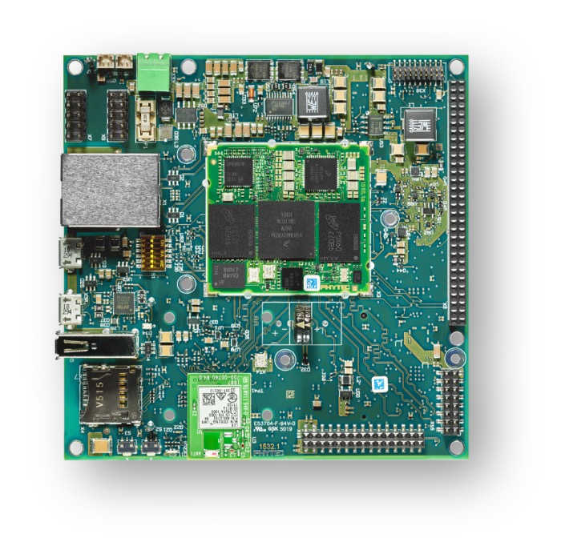

phyBOARD-Polis i.MX8M Mini
phyBOARD-Polis i.MX8M Mini
Overview
The phyBOARD-Polis, either a development platform for the phyCORE-i.MX 8M Mini/Nano, or a powerful, industry-compatible single-board computer for immediate implementation of your product idea. As a development platform, the phyBOARD-Polis serves as reference design for your customer-specific application and enables parallel development of the software and carrier board for the phyCORE-i.MX 8M Mini/Nano.
The phyBOARD-Polis is composed of a quad Cortex-A53 cluster and a single Cortex-M4 core. Zephyr OS is ported to run on both clusters.
As a powerful, industrial single-board computer (SBC), the phyBOARD-Polis is equipped with a variety of standard interfaces which are available on standard or socket/pin header connectors, while interesting extensions of the phyCORE-i.MX 8M Mini/Nano features such as CAN FD, WLAN and an integrated TPM chip further extend the range of applications that can be developed with the phyCORE-i.MX 8M Mini/Nano.
Board features:
RAM: 512MB - 4GB (LPDDR4)
Storage:
4GB - 128GB eMMC
8MB - 128MB SPI NOR Flash
microSD Interface
4kB EEPROM
Wireless:
WiFi: 802.11 b/g/n (ac) 2.4 GHz / 5 GHz
BLE 4.2
USB:
1x USB2.0 OTG
1x USB2.0
Ethernet: 1x 10/100/1000BASE-T
Interfaces: - 1x RS232 / RS485 - 2x UART - 3x I²C - 2x SPI - Up to 4x PWM - 4x SAI - 1x MIPI CSI-2 - 1x MIPI DSI-2 - 2x MMC/SD/SDIO - 1x PCIe (mini PCIE)
LEDs:
1x Status LED (3 Color LED)
1x Debug UART LED
Debug
JTAG 20-pin connector
MicroUSB for UART debug, two COM ports for A53 and M4
{kind=link}

More information about the board can be found at the PHYTEC website.
Supported Features
The phyboard_polis board supports the hardware features listed below.
- on-chip / on-board
- Feature integrated in the SoC / present on the board.
- 2 / 2
-
Number of instances that are enabled / disabled.
Click on the label to see the first instance of this feature in the board/SoC DTS files. -
vnd,foo -
Compatible string for the Devicetree binding matching the feature.
Click on the link to view the binding documentation.
Connections and IOs
The following components are tested and working correctly.
UART:
UART4 is only accessible from the M4-Core of the phyBOARD-Polis. Taking this into account and to minimize problems if both clusters are running, Zephyr OS is configured by default to use UART4 with M4-Core and UART3 with Cortex-A53 cluster.
Board Name |
SoM Name |
Usage |
|---|---|---|
RS232/485 |
UART1 |
RS232 / RS485 with flow-control |
To WiFi Module |
UART2 |
UART to WiFi/BLE Module |
Debug USB(A53) |
UART3 |
UART Debug Console via USB |
Debug USB(M4) |
UART4 |
UART Debug Console via USB |
Note
Please note, that the to UART2 connected Wifi/BLE Module isn’t working with Zephyr yet.
Warning
On Boards with the version number 1532.1 UART4 isn’t connected to the Debug USB. UART4 connects to pin 10(RX) and 12(TX) on the X8 pinheader.
SPI:
ECSPI is disabled by default. On phyBOARD-Polis, the SoC’s ECSPI3 is not usable. ECSPI1 is connected to the MCP2518 CAN controller with a chip select. Another device can be connected via the expansion header (X8): PIN 5, 6, 7, 8 (CS, MOSI, MISO, SCLK). ECSPI2 is connected to the TPM module. Currently the TPM module is not supported by Zephyr.
Note
Please note, that it is necessary to disable ECSPI1 in the Linux devicetree before you can use it on the M4-Core with Zephyr. See section “Disabling Interfaces in Linux” for more information.
LEDs:
Zephyr has the 3-color status LED configured. The led0 alias (the standard Zephyr LED) is configured to be the blue LED. The LED can also light up in red and green.
GPIO:
The pinmuxing for the GPIOs is the standard pinmuxing of the mimx8mm devicetree created by NXP. You can find it here:
CAN:
The MCP2518 is connected via ECSPI1. The CAN interface is disabled by default to not interfere with Linux on the A53-Core. If you want to use the CAN interface you need to disable ECSPI in the Linux devicetree.
Warning
There is a bug in the MCP2518 driver that causes the enable pin of the transceiver to be not set. This causes a ENETDOWN error when trying to send a CAN frame. Receiving CAN frames in listen-only mode is possible.
The Pinout of the phyBOARD-Polis can be found here:
System Clock
The M4 Core is configured to run at a 400 MHz clock speed.
Programming and Debugging (A53)
Starting the A53-Core via U-Boot
As an example, one can build an image with the Basic Synchronization sample:
# From the root of the zephyr repository
west build -b phyboard_polis/mimx8mm6/a53 samples/synchronization
Load the compiled zephyr.bin to memory address 0x93c00000. This should output something like this:
u-boot=> tftp 0x93c00000 192.168.3.10:zephyr.bin
Using ethernet@30be0000 device
TFTP from server 192.168.3.10; our IP address is 192.168.3.11
Filename 'zephyr.bin'.
Load address: 0x93c000000
Loading: ##########
9.4 MiB/s
done
Bytes transferred = 49288 (c088 hex)
Then use the following command to boot Zephyr on the core0:
u-boot=> dcache off; icache flush; go 0x93c00000;
The A53-Core is now started up and running with the following console output (UART3):
## Starting application at 0x93C00000 ...
*** Booting Zephyr OS build v4.3.0-7560-g0dff993ff889 ***
thread_a: Hello World from cpu 0 on phyboard_polis!
thread_b: Hello World from cpu 0 on phyboard_polis!
thread_a: Hello World from cpu 0 on phyboard_polis!
thread_b: Hello World from cpu 0 on phyboard_polis!
Cortex-A53 SMP
The default SMP variant runs on all four Cortex-A Cores, it could be changed by
disabling some A53 Core nodes in dts and change CONFIG_MP_MAX_NUM_CPUS
to the count of enabled A53 Cores in dts.
Building SMP kernel, for example, with the Basic Synchronization sample:
# From the root of the zephyr repository
west build -b phyboard_polis/mimx8mm6/a53/smp samples/synchronization
And running it, would result in the following console output (UART3):
## Starting application at 0x93C00000 ...
*** Booting Zephyr OS build v4.3.0-7560-g0dff993ff889 ***
Secondary CPU core 1 (MPID:0x1) is up
Secondary CPU core 2 (MPID:0x2) is up
Secondary CPU core 3 (MPID:0x3) is up
thread_a: Hello World from cpu 0 on phyboard_polis!
thread_b: Hello World from cpu 1 on phyboard_polis!
thread_a: Hello World from cpu 0 on phyboard_polis!
thread_b: Hello World from cpu 1 on phyboard_polis!
Programming and Debugging (M4)
The i.MX8MM does not have a separate flash for the M4-Core. Because of this the A53-Core has to load the program for the M4-Core to the right memory address, set the PC and start the processor. This can be done with U-Boot or Phytec’s Linux BSP via remoteproc.
Because remoteproc in Phytec’s BSP only writes to the TCM memory area, everything was tested in this memory area.
You can read more about remoteproc in Phytec’s BSP here: Remoteproc BSP
These are the memory mapping for A53 and M4:
Region |
Cortex-A53 |
Cortex-M4 (System Bus) |
Cortex-M4 (Code Bus) |
Size |
|---|---|---|---|---|
OCRAM |
0x00900000-0x0093FFFF |
0x20200000-0x2023FFFF |
0x00900000-0x0093FFFF |
256KB |
TCMU |
0x00800000-0x0081FFFF |
0x20000000-0x2001FFFF |
128KB |
|
TCML |
0x007E0000-0x007FFFFF |
0x1FFE0000-0x1FFFFFFF |
128KB |
|
OCRAM_S |
0x00180000-0x00187FFF |
0x20180000-0x20187FFF |
0x00180000-0x00187FFF |
32KB |
For more information about memory mapping see the i.MX 8M Applications Processor Reference Manual (section 2.1.2 and 2.1.3)
At compilation time you have to choose which RAM will be used. This configuration is done in boards/phytec/phyboard_polis/phyboard_polis_mimx8mm6_m4.dts with “zephyr,flash” and “zephyr,sram” properties.
The following configurations are possible for the flash and sram chosen nodes to change the used memory area:
"zephyr,flash"
- &tcml_code
- &ocram_code
- &ocram_s_code
"zephyr,sram"
- &tcmu_sys
- &ocram_sys
- &ocram_s_sys
By default Zephyr is configured to use the TCM memory area and CONFIG_XIP is disabled. If you want to use the OCRAM memory area you have to enable CONFIG_XIP.
Starting the M4-Core via U-Boot
Load the compiled zephyr.bin to memory address 0x4800000. This should output something like this:
u-boot=> tftp 0x48000000 192.168.3.10:zephyr.bin
Using ethernet@30be0000 device
TFTP from server 192.168.3.10; our IP address is 192.168.3.11
Filename 'zephyr.bin'.
Load address: 0x48000000
Loading: ##
2 KiB/s
done
Bytes transferred = 27240 (6a68 hex)
Because it’s not possible to load directly to the TCM memory area you have to copy the binaries. The last argument given is the size of the file in bytes, you can copy it from the output of the last command.
u-boot=> cp.b 0x48000000 0x7e0000 27240
And finally starting the M4-Core at the right memory address:
u-boot=> bootaux 0x7e0000
## Starting auxiliary core stack = 0x20003A58, pc = 0x1FFE1905...
Starting the M4-Core via remoteproc
Copy the zephyr.elf to /lib/firmware on the target. Maybe a Zephyr sample
will be included in a future BSP release.
Note
In order to use remoteproc you have to add imx8mm-phycore-rpmsg.dtbo at
the end of the line in the /boot/bootenv.txt, then reboot the target.
Warning
Remoteproc only reads firmware files from the /lib/firmware directory!
If you try to load a binary from another location unexpected errors will
occur!
To load and start a firmware use this commands:
target$ echo /lib/firmware/zephyr.elf > /sys/class/remoteproc/remoteproc0/firmware
target$ echo start > /sys/class/remoteproc/remoteproc0/state
[ 90.700611] remoteproc remoteproc0: powering up imx-rproc
[ 90.706114] remoteproc remoteproc0: Direct firmware load for /lib/firmware/zephyr.elf failed w2
[ 90.716571] remoteproc remoteproc0: Falling back to sysfs fallback for: /lib/firmware/zephyr.elf
[ 90.739280] remoteproc remoteproc0: Booting fw image /lib/firmware/zephyr.elf, size 599356
[ 90.804448] remoteproc remoteproc0: remote processor imx-rproc is now up
The M4-Core is now started up and running. You can see the output from Zephyr on UART4.
Debugging
The phyBOARD-Polis can be debugged using a JTAG Debugger.
The easiest way to do that is to use a SEGGER JLink Debugger and Phytec’s
PEB-EVAL-01 Shield, which can be directly connected to the JLink.
You can find the JLink Software package here: JLink Software

PEB-EVAL-01
To debug efficiently you should use multiple terminals:
(But its also possible to use west debug)
After connecting everything and building with west use this command while in the directory of the program you built earlier to start a debug server:
host$ west debugserver
West automatically connects via the JLink to the Target. And keeps open a debug server.
Use another terminal, start gdb, connect to target and load Zephyr on the target:
host$ gdb-multiarch build/zephyr/zephyr.elf -tui
(gdb) targ rem :2331
Remote debugging using :2331
0x1ffe0008 in _vector_table ()
(gdb) mon halt
(gdb) mon reset
(gdb) c
Continuing.
The program can be debugged using standard gdb techniques.
Disabling Interfaces in Linux
If Zephyr is used on the M4-Core while Linux runs on the A53-Core, it is recommended to disable the Interfaces used by the M4-Core to avoid conflicts. More simple interfaces can be enabled on both cores at the same time, for example GPIO. If you do that, keep in mind that conflicts can still arise.
For more complex interfaces like SPI it is necessary to disable them in the Linux devicetree, otherwise Linux will probably crash in a panic, resetting the SoC. For example: disabling ECSPI1 in Linux to use it on the M4-Core with Zephyr:
Create a new file called
disable_spi.dtswith the following content:
/dts-v1/; /plugin/; / { fragment@0 { target = <&ecspi1>; __overlay__ { status = "disabled"; }; }; };
Compile the file with the dtc compiler to a devicetree blob:
$ dtc -@ -I dts -O dtb -o imx8mm-phyboard-polis-disable-spi.dtbo disable_spi.dts;
Copy the compiled file to the boot partition of the target.
Add the filename to the
/boot/bootenv.txtfile at the end of the line.Reboot the target, the SPI interface is now disabled in Linux.